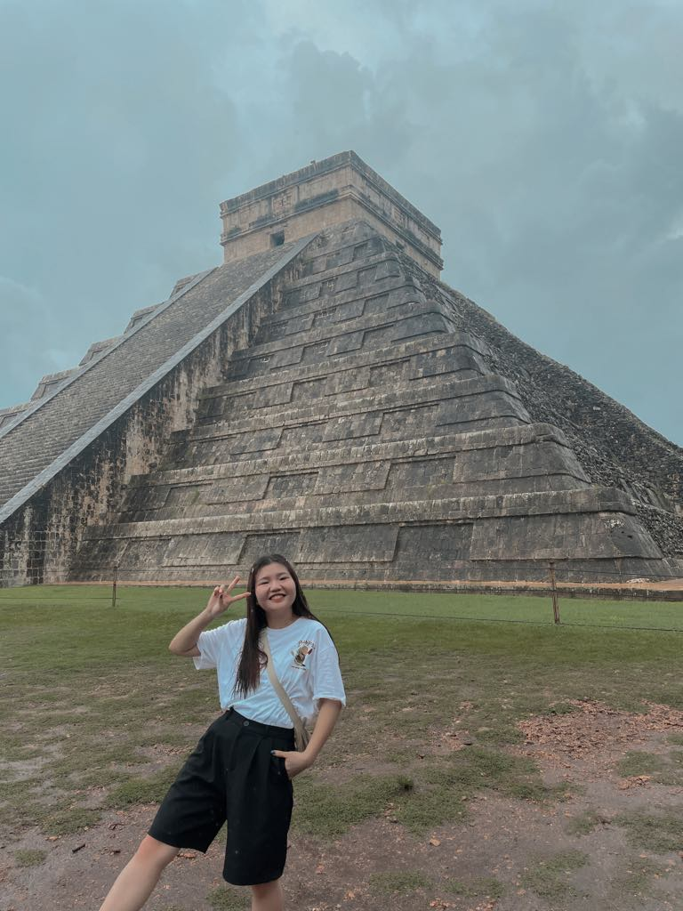

Yipei Lin

I hailing from the beautiful island of Taiwan, known for its diverse and delicious foods.
I'm the eldest among my two sisters; one is currently a high school senior while the other is serving a mission in Toronto.
My major is accounting, and I have a minor in computer science.
My interests are diverse, ranging from traveling to reading and even knitting.